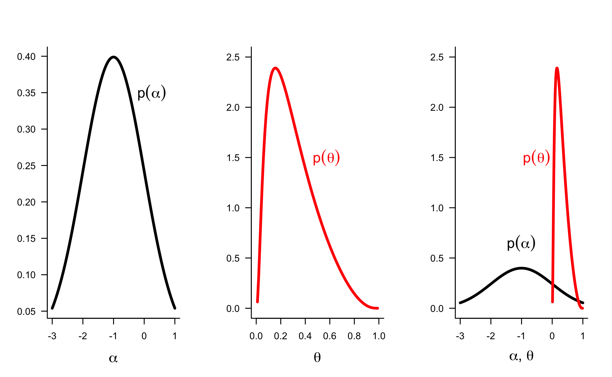
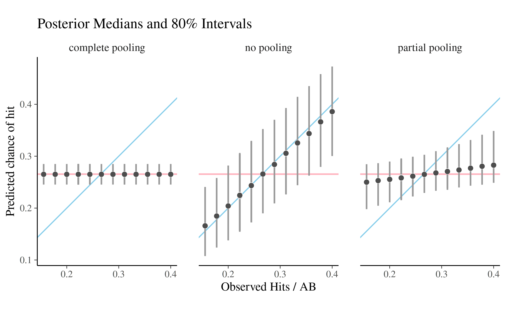
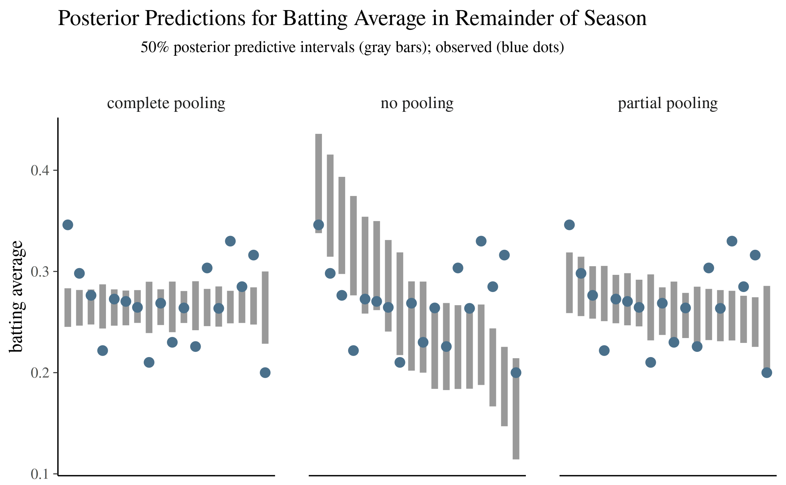
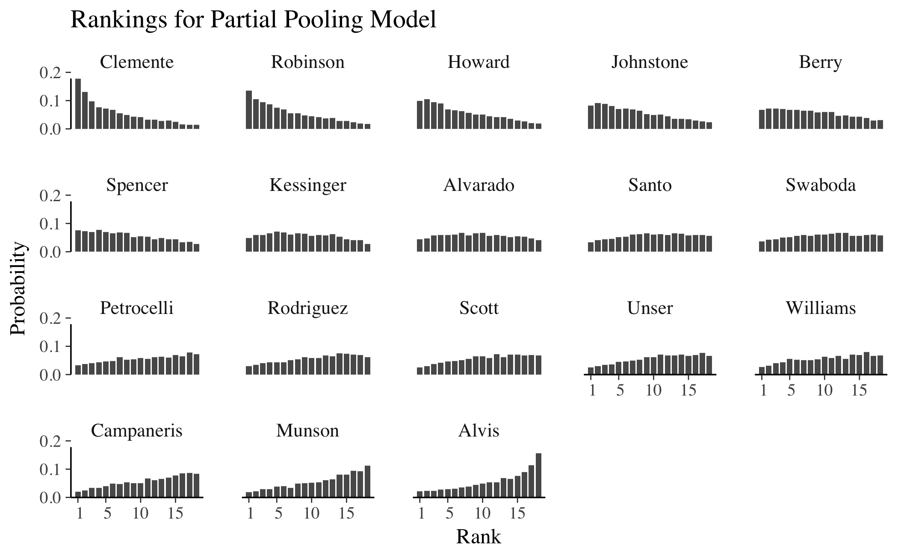
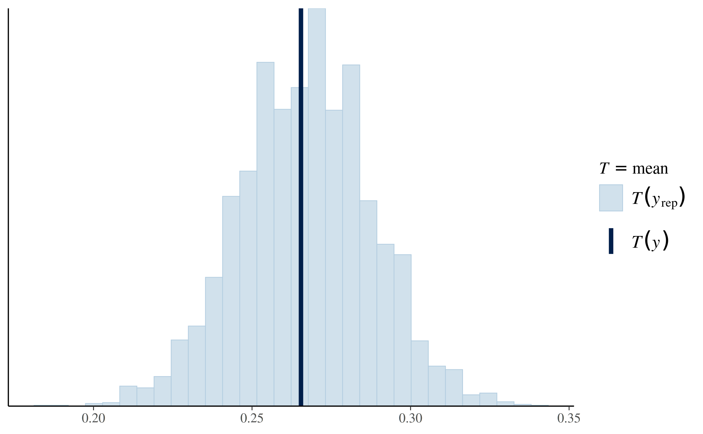
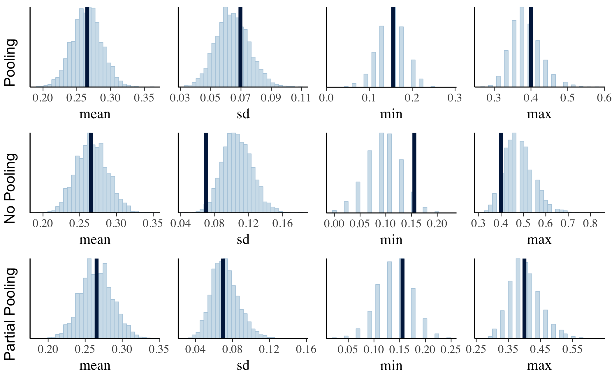
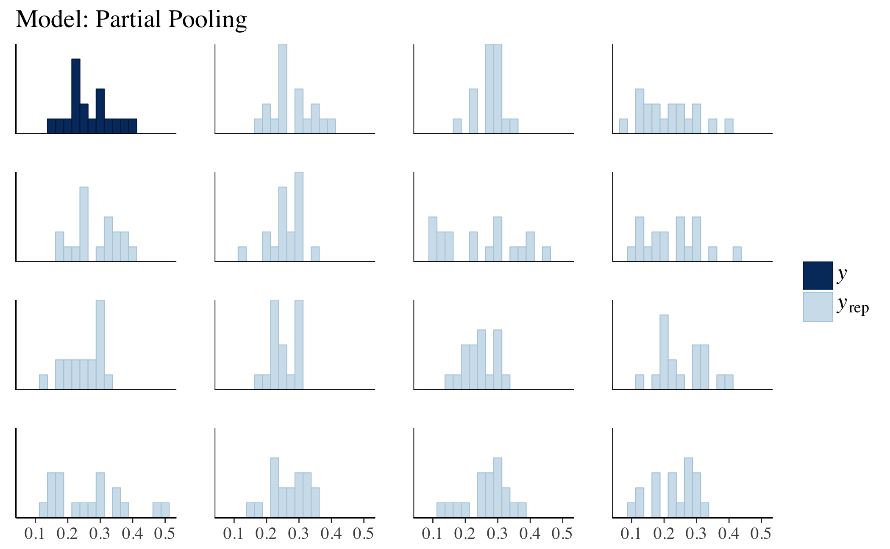

Hierarchical Partial Pooling for Repeated Binary Trials
Bob Carpenter, Jonah Gabry and Ben Goodrich
2019-10-04
pooling.RmdIntroduction
This vignette illustrates the effects on posterior inference of pooling data (a.k.a sharing strength) across units for repeated binary trial data. It provides R code to fit and check predictive models for three situations: (a) complete pooling, which assumes each unit is the same, (b) no pooling, which assumes the units are unrelated, and (c) partial pooling, where the similarity among the units is estimated. The note explains with working examples how to (i) fit the models using rstanarm and plot the results, (ii) estimate event probabilities, (iii) evaluate posterior predictive densities to evaluate model predictions on held-out data, (iv) rank units by chance of success, (v) perform multiple comparisons in several settings, (vi) replicate new data for posterior \(p\)-values, and (vii) perform graphical posterior predictive checks.
The content of the vignette is based on Bob Carpenter’s Stan tutorial Hierarchical Partial Pooling for Repeated Binary Trials, but here we show how to fit the models and carry out predictions and model checking and comparison using rstanarm. Most of the text is taken from the original, with some additions and subtractions to make the content more useful for rstanarm users. The Stan code from the original tutorial has also been entirely removed, as rstanarm will fit all of the models in Stan without the user having to write the underlying Stan programs. The Stan code in the original document is a good reference for anyone interested in how these models are estimated “under-the-hood”, though the parameterizations used internally by rstanarm differ somewhat from those in the original.
Repeated Binary Trials
Suppose that for each of \(N\) units \(n \in 1{:}N\), we observe \(y_n\) successes out of \(K_n\) trials. For example, the data may consist of
rat tumor development, with \(y_n\) rats developing tumors of \(K_n\) total rats in experimental control group \(n \in 1{:}N\) (Tarone 1982)
surgical mortality, with \(y_n\) surgical patients dying in \(K_n\) surgeries for hospitals \(n \in 1{:}N\) (Spiegelhalter et al. 1996)
baseball batting ability, with \(y_n\) hits in \(K_n\) at bats for baseball players \(n \in 1{:}N\) (Efron and Morris 1975; Carpenter 2009)
machine learning system accuracy, with \(y_n\) correct classifications out of \(K_n\) examples for systems \(n \in 1{:}N\) (ML conference proceedings; Kaggle competitions)
In this vignette we use the small baseball data set of Efron and Morris (1975), but we also provide the rat control data of Tarone (1982), the surgical mortality data of Spiegelhalter et al. (1996) and the extended baseball data set of Carpenter (2009).
Baseball Hits (Efron and Morris 1975)
As a running example, we will use the data from Table 1 of (Efron and Morris 1975), which is included in rstanarm under the name bball1970 (it was downloaded 24 Dec 2015 from here). It is drawn from the 1970 Major League Baseball season (from both leagues).
Player AB Hits RemainingAB RemainingHits
1 Clemente 45 18 367 127
2 Robinson 45 17 426 127
3 Howard 45 16 521 144
4 Johnstone 45 15 275 61
5 Berry 45 14 418 114
6 Spencer 45 14 466 126
7 Kessinger 45 13 586 155
8 Alvarado 45 12 138 29
9 Santo 45 11 510 137
10 Swaboda 45 11 200 46
11 Petrocelli 45 10 538 142
12 Rodriguez 45 10 186 42
13 Scott 45 10 435 132
14 Unser 45 10 277 73
15 Williams 45 10 591 195
16 Campaneris 45 9 558 159
17 Munson 45 8 408 129
18 Alvis 45 7 70 14# A few quantities we'll use throughout
N <- nrow(bball)
K <- bball$AB
y <- bball$Hits
K_new <- bball$RemainingAB
y_new <- bball$RemainingHitsThe data separates the outcome from the initial 45 at-bats from the rest of the season. After running this code, N is the number of units (players). Then for each unit n, K[n] is the number of initial trials (at-bats), y[n] is the number of initial successes (hits), K_new[n] is the remaining number of trials (remaining at-bats), and y_new[n] is the number of successes in the remaining trials (remaining hits).
The remaining data can be used to evaluate the predictive performance of our models conditioned on the observed data. That is, we will “train” on the first 45 at bats and see how well our various models do at predicting the rest of the season.
Pooling
With complete pooling, each unit is assumed to have the same chance of success. With no pooling, each unit is assumed to have a completely unrelated chance of success. With partial pooling, each unit is assumed to have a different chance of success, but the data for all of the observed units informs the estimates for each unit.
Partial pooling is typically accomplished through hierarchical models. Hierarchical models directly model the population of units. From a population model perspective, no pooling corresponds to infinite population variance, whereas complete pooling corresponds to zero population variance.
In the following sections, all three types of pooling models will be fit for the baseball data.
Fitting the Models
First we’ll create some useful objects to use throughout the rest of this vignette. One of them is a function batting_avg, which just formats a number to include three decimal places to the right of zero when printing, as is customary for batting averages.
batting_avg <- function(x) print(format(round(x, digits = 3), nsmall = 3), quote = FALSE)
player_avgs <- y / K # player avgs through 45 AB
tot_avg <- sum(y) / sum(K) # overall avg through 45 AB
cat("Player averages through 45 at-bats:\n")
batting_avg(player_avgs)
cat("Overall average through 45 at-bats:\n")
batting_avg(tot_avg)Player averages through 45 at-bats:
[1] 0.400 0.378 0.356 0.333 0.311 0.311 0.289 0.267 0.244 0.244 0.222
[12] 0.222 0.222 0.222 0.222 0.200 0.178 0.156
Overall average through 45 at-bats:
[1] 0.265Complete Pooling
The complete pooling model assumes a single parameter \(\theta\) representing the chance of success for all units (in this case players).
Assuming each player’s at-bats are independent Bernoulli trials, the probability distribution for each player’s number of hits \(y_n\) is modeled as
\[ p(y_n \, | \, \theta) \ = \ \mathsf{Binomial}(y_n \, | \, K_n, \theta). \]
When viewed as a function of \(\theta\) for fixed \(y_n\), this is called the likelihood function.
Assuming each player is independent leads to the complete data likelihood
\[ p(y \, | \, \theta) = \prod_{n=1}^N \mathsf{Binomial}(y_n \, | \, K_n, \theta). \]
Using family=binomial("logit"), the stan_glm function in rstanarm will parameterize the model in terms of the log-odds \(\alpha\), which are defined by the logit transform as
\[ \alpha = \mathrm{logit}(\theta) = \log \, \frac{\theta}{1 - \theta}. \]
For example, \(\theta = 0.25\) corresponds to odds of \(.25\) to \(.75\) (equivalently, \(1\) to \(3\)), or log-odds of \(\log .25 / .75 = -1.1\).
The model is therefore
\[ p(y_n \, | \, K_n, \alpha) \ = \ \mathsf{Binomial}(y_n \, | \, K_n, \ \mathrm{logit}^{-1}(\alpha)) \]
The inverse logit function is the logistic sigmoid from which logistic regression gets its name because the inverse logit function is also the standard logistic Cumulative Distribution Function (CDF),
\[ \mathrm{logit}^{-1}(\alpha) = \frac{1}{1 + \exp(-\alpha)} = \theta. \]
By construction, for any \(\alpha \in (-\infty, \infty)\), \(\mathrm{logit}^{-1}(\alpha) \in (0, 1)\); the sigmoid converts arbitrary log odds back to the probability scale.
We will use a normal distribution with mean \(-1\) and standard deviation \(1\) as the prior on the log-odds \(\alpha\). This is a weakly informative prior that places about 95% of the prior probability in the interval \((-3, 1)\), which inverse-logit transforms to the interval \((0.05, 0.73)\). The prior median \(-1\) corresponds to a \(0.27\) chance of success. In fact, an even narrower prior is actually motivated here from substantial baseball knowledge.
The figure below shows both this prior on \(\alpha\) as well as the prior it implies on the probability \(\theta\).

To fit the model we call stan_glm with the formula cbind(Hits, AB - Hits) ~ 1. The left-hand side of the formula specifies the binomial outcome by providing the number of successes (hits) and failures (at-bats) for each player, and the right-hand side indicates that we want an intercept-only model.
SEED <- 101
wi_prior <- normal(-1, 1) # weakly informative prior on log-odds
fit_pool <- stan_glm(cbind(Hits, AB - Hits) ~ 1, data = bball, family = binomial("logit"),
prior_intercept = wi_prior, seed = SEED)The summary function will compute all sorts of summary statistics from the fitted model, but here we’ll create a small function that will compute just a few posterior summary statistics that we’ll want for each of the models we estimate. The summary_stats function, defined below, will take a matrix of posterior draws as its input, apply an inverse-logit transformation (to convert from log-odds to probabilities) and then compute the median and 80% interval.
invlogit <- plogis # function(x) 1/(1 + exp(-x))
summary_stats <- function(posterior) {
x <- invlogit(posterior) # log-odds -> probabilities
t(apply(x, 2, quantile, probs = c(0.1, 0.5, 0.9)))
}
pool <- summary_stats(as.matrix(fit_pool)) # as.matrix extracts the posterior draws
pool <- matrix(pool, # replicate to give each player the same estimates
nrow(bball), ncol(pool), byrow = TRUE,
dimnames = list(bball$Player, c("10%", "50%", "90%")))
batting_avg(pool) 10% 50% 90%
Clemente 0.245 0.265 0.285
Robinson 0.245 0.265 0.285
Howard 0.245 0.265 0.285
Johnstone 0.245 0.265 0.285
Berry 0.245 0.265 0.285
Spencer 0.245 0.265 0.285
Kessinger 0.245 0.265 0.285
Alvarado 0.245 0.265 0.285
Santo 0.245 0.265 0.285
Swaboda 0.245 0.265 0.285
Petrocelli 0.245 0.265 0.285
Rodriguez 0.245 0.265 0.285
Scott 0.245 0.265 0.285
Unser 0.245 0.265 0.285
Williams 0.245 0.265 0.285
Campaneris 0.245 0.265 0.285
Munson 0.245 0.265 0.285
Alvis 0.245 0.265 0.285With more data, such as from more players or from the rest of the season, the posterior approaches a delta function around the maximum likelihood estimate and the posterior interval around the central posterior intervals will shrink. Nevertheless, even if we know a player’s chance of success exactly, there is a large amount of uncertainty in running \(K\) binary trials with that chance of success; using a binomial model fundamentally bounds our prediction accuracy.
Although this model will be a good baseline for comparison, we have good reason to believe from a large amount of prior data (players with as many as 10,000 trials) that it is very unlikely that all baseball players have the same chance of success.
No Pooling
A model with no pooling involves a separate chance-of-success parameter \(\theta_n \in [0,1]\) for each player \(n\), where the \(\theta_n\) are assumed to be independent.
rstanarm will again parameterize the model in terms of the log-odds, \(\alpha_n = \mathrm{logit}(\theta_n)\), so the likelihood then uses the log-odds of success \(\alpha_n\) for unit \(n\) in modeling the number of successes \(y_n\) as
\[ p(y_n \, | \, \alpha_n) = \mathsf{Binomial}(y_n \, | \, K_n, \mathrm{logit}^{-1}(\alpha_n)). \]
Assuming the \(y_n\) are independent (conditional on \(\theta\)), this leads to the total data likelihood
\[ p(y \, | \, \alpha) = \prod_{n=1}^N \mathsf{Binomial}(y_n \, | \, K_n, \mathrm{logit}^{-1}(\alpha_n)). \]
To fit the model we need only tweak the model formula used for the full pooling model to drop the intercept and instead include as the only predictor the factor variable Player. This is equivalent to estimating a separate intercept on the log-odds scale for each player. We’ll also use the prior (rather than prior_intercept) argument since Player is considered a predictor rather than an intercept from R’s perspective. Using the same weakly informative prior now means that the each \(\alpha_n\) gets a \(\mathsf{Normal}(-1, 1)\) prior, independent of the others.
fit_nopool <- update(fit_pool, formula = . ~ 0 + Player, prior = wi_prior)
nopool <- summary_stats(as.matrix(fit_nopool))
rownames(nopool) <- as.character(bball$Player)
batting_avg(nopool)
parameters 10% 50% 90%
Clemente 0.302 0.386 0.476
Robinson 0.282 0.367 0.457
Howard 0.262 0.344 0.436
Johnstone 0.246 0.326 0.415
Berry 0.226 0.302 0.389
Spencer 0.226 0.305 0.391
Kessinger 0.209 0.283 0.368
Alvarado 0.190 0.264 0.351
Santo 0.172 0.245 0.328
Swaboda 0.169 0.243 0.330
Petrocelli 0.156 0.224 0.305
Rodriguez 0.157 0.222 0.304
Scott 0.153 0.222 0.306
Unser 0.156 0.225 0.303
Williams 0.155 0.224 0.304
Campaneris 0.139 0.206 0.284
Munson 0.123 0.184 0.262
Alvis 0.108 0.164 0.237Each 80% interval is much wider than the estimated interval for the population in the complete pooling model; this is to be expected—there are only 45 data units for each parameter here as opposed to 810 in the complete pooling case. If the units each had different numbers of trials, the intervals would also vary based on size.
As the estimated chance of success goes up toward 0.5, the 80% intervals gets wider. This is to be expected for chance of success parameters, because the variance is maximized when \(\theta = 0.5\).
Based on our existing knowledge of baseball, the no-pooling model is almost certainly overestimating the high abilities and underestimating lower abilities (Ted Williams, 30 years prior to the year this data was collected, was the last player with a 40% observed success rate over a season, whereas 20% or less is too low for all but a few rare defensive specialists).
Partial Pooling
Complete pooling provides estimated abilities that are too narrowly distributed for the units and removes any chance of modeling population variation. Estimating each chance of success separately without any pooling provides estimated abilities that are too broadly distributed for the units and hence too variable. Clearly some amount of pooling between these two extremes is called for. But how much?
A hierarchical model treats the players as belonging to a population of players. The properties of this population will be estimated along with player abilities, implicitly controlling the amount of pooling that is applied. The more variable the (estimate of the) population, the less pooling is applied. Mathematically, the hierarchical model places a prior on the abilities with parameters that are themselves estimated.
This model can be estimated using the stan_glmer function.
fit_partialpool <-
stan_glmer(cbind(Hits, AB - Hits) ~ (1 | Player), data = bball,
family = binomial("logit"),
prior_intercept = wi_prior, seed = SEED)Because stan_glmer (like glmer) estimates the varying intercepts for Player by estimating a single global intercept \(\alpha_0\) and individual deviations from that intercept for each player \(\delta_n = \alpha_n - \alpha_0\), to get the posterior distribution for each \(\alpha_n\) we need to shift each of the posterior draws by the corresponding draw for the intercept. We can do this easily using the sweep function.
# shift each player's estimate by intercept (and then drop intercept)
shift_draws <- function(draws) {
sweep(draws[, -1], MARGIN = 1, STATS = draws[, 1], FUN = "+")
}
alphas <- shift_draws(as.matrix(fit_partialpool))
partialpool <- summary_stats(alphas)
partialpool <- partialpool[-nrow(partialpool),]
rownames(partialpool) <- as.character(bball$Player)
batting_avg(partialpool)
parameters 10% 50% 90%
Clemente 0.248 0.283 0.346
Robinson 0.247 0.280 0.339
Howard 0.243 0.276 0.331
Johnstone 0.240 0.275 0.324
Berry 0.237 0.271 0.317
Spencer 0.237 0.271 0.318
Kessinger 0.232 0.268 0.308
Alvarado 0.228 0.264 0.305
Santo 0.221 0.261 0.299
Swaboda 0.222 0.262 0.299
Petrocelli 0.217 0.258 0.295
Rodriguez 0.216 0.258 0.294
Scott 0.215 0.258 0.295
Unser 0.217 0.258 0.293
Williams 0.217 0.258 0.296
Campaneris 0.211 0.255 0.291
Munson 0.205 0.252 0.287
Alvis 0.197 0.249 0.284Here the estimates are less extreme than in the no-pooling case, which we should expect due to the partial pooling. It is also clear from the wide posteriors for the \(\theta_n\) that there is considerable uncertainty in the estimates of chance-of-success on an unit-by-unit (player-by-player) basis.
Observed vs. Estimated Chance of Success
Figure 5.4 from (Gelman et al. 2013) plots the observed number of successes \(y_n\) for the first \(K_n\) trials versus the median and 80% intervals for the estimated chance-of-success parameters \(\theta_n\) in the posterior. The following R code reproduces a similar plot for our data.
library(ggplot2)
models <- c("complete pooling", "no pooling", "partial pooling")
estimates <- rbind(pool, nopool, partialpool)
colnames(estimates) <- c("lb", "median", "ub")
plotdata <- data.frame(estimates,
observed = rep(player_avgs, times = length(models)),
model = rep(models, each = N),
row.names = NULL)
ggplot(plotdata, aes(x = observed, y = median, ymin = lb, ymax = ub)) +
geom_hline(yintercept = tot_avg, color = "lightpink", size = 0.75) +
geom_abline(intercept = 0, slope = 1, color = "skyblue") +
geom_linerange(color = "gray60", size = 0.75) +
geom_point(size = 2.5, shape = 21, fill = "gray30", color = "white", stroke = 0.2) +
facet_grid(. ~ model) +
coord_fixed() +
scale_x_continuous(breaks = c(0.2, 0.3, 0.4)) +
labs(x = "Observed Hits / AB", y = "Predicted chance of hit") +
ggtitle("Posterior Medians and 80% Intervals")
The horizontal axis is the observed rate of success, broken out by player (the overplotting is from players with the same number of successes—they all had the same number of trials in this data). The dots are the posterior medians with bars extending to cover the central 80% posterior interval. Players with the same observed rates are indistinguishable, any differences in estimates are due to MCMC error.
The horizontal red line has an intercept equal to the overall success rate, The overall success rate is also the posterior mode (i.e., maximum likelihood estimate) for the complete pooling model. The diagonal blue line has intercept 0 and slope 1. Estimates falling on this line make up the maximum likelihood estimates for the no-pooling model. Overall, the plot makes the amount of pooling toward the prior evident.
Posterior Predictive Distribution
After we have fit a model using some “training” data, we are usually interested in the predictions of the fitted model for new data, which we can use to
make predictions for new data points; e.g., predict how many hits will Roberto Clemente get in the rest of the season,
evaluate predictions against observed future data; e.g., how well did we predict how many hits Roberto Clemente actually got in the rest of the season, and
generate new simulated data to validate our model fits.
With full Bayesian inference, we do not make a point estimate of parameters and use those prediction—we instead use an average of predictions weighted by the posterior.
Given data \(y\) and a model with parameters \(\theta\), the posterior predictive distribution for new data \(\tilde{y}\) is defined by
\[ p(\tilde{y} \, | \, y) \ = \ \int_{\Theta} p(\tilde{y} \, | \, \theta) \ p(\theta \, | \, y) \ \mathrm{d}\theta, \]
where \(\Theta\) is the support of the parameters \(\theta\). What an integral of this form says is that \(p(\tilde{y} \, | \, y)\) is defined as a weighted average over the legal parameter values \(\theta \in \Theta\) of the likelihood function \(p(\tilde{y} \, | \, \theta)\), with weights given by the posterior, \(p(\theta \, | \, y)\). While we do not want to get sidetracked with the notational and mathematical subtleties of expectations here, the posterior predictive density reduces to the expectation of \(p(\tilde{y} \, | \, \theta)\) conditioned on \(y\).
Evaluating Held-Out Data Predictions
Because the posterior predictive density is formulated as an expectation over the posterior, it is possible to compute via MCMC. With \(M\) draws \(\theta^{(m)}\) from the posterior \(p(\theta \, | \, y)\), the posterior predictive log density for new data \(y^{\mathrm{new}}\) is given by the MCMC approximation
\[ \log \frac{1}{M} \, \sum_{m=1}^M \ p\left( y^{\mathrm{new}} \, | \, \theta^{(m)} \right). \]
In practice, this requires care to prevent underflow in floating point calculations; a robust calculation on the log scale is provided below.
Simulating Replicated Data
It is also straightforward to use forward simulation from the probability distribution of the data \(p(y \, | \, \theta)\) to generate replicated data \(y^{\mathrm{rep}}\) according to the posterior predictive distribution. (Recall that \(p(y \, | \, \theta)\) is called the probability distribution when \(\theta\) is fixed and the likelihood when \(y\) is fixed.)
With \(M\) draws \(\theta^{(m)}\) from the posterior \(p(\theta \, | \, y)\), replicated data can be simulated by drawing a sequence of \(M\) simulations according \(y^{\mathrm{rep} \ (m)}\) with each drawn according to distribution \(p(y \, | \, \theta^{(m)})\). This latter random variate generation can usually be done efficiently (both computationally and statistically) by means of forward simulation from the probability distribution of the data; we provide an example below.
Prediction for New Trials
Efron and Morris’s (1975) baseball data includes not only the observed hit rate in the initial 45 at bats, but also includes the data for how the player did for the rest of the season. The question arises as to how well these models predict a player’s performance for the rest of the season based on their initial 45 at bats.
Calibration
A well calibrated statistical model is one in which the uncertainty in the predictions matches the uncertainty in further data. That is, if we estimate posterior 50% intervals for predictions on new data (here, number of hits in the rest of the season for each player), roughly 50% of the new data should fall in its predicted 50% interval. If the model is true in the sense of correctly describing the generative process of the data, then Bayesian inference is guaranteed to be well calibrated. Given that our models are rarely correct in this deep sense, in practice we are concerned with testing their calibration on quantities of interest.
Why Evaluate with the Predictive Posterior?
The predictive posterior density directly measures the probability of seeing the new data. The higher the probability assigned to the new data, the better job the model has done at predicting the outcome. In the limit, an ideal model would perfectly predict the new outcome with no uncertainty (probability of 1 for a discrete outcome or a delta function at the true value for the density in a continuous outcome). This notion is related to the notion of sharpness discussed in the previous section, because if the new observations have higher predictive densities, they’re probably within narrower posterior intervals (Gneiting et al. 2007).
\(\log E[p(\tilde{y} \, | \, \theta)]\) vs \(E[\log p(\tilde{y} \, | \, \theta)]\)
The log of posterior predictive density is defined in the obvious way as
\[ \log p(\tilde{y} \, | \, y) = \log \int_{\Theta} p(\tilde{y} \, | \, \theta) \ p(\theta \, | \, y) \ \mathrm{d}\theta. \]
This is not a posterior expectation, but rather the log of a posterior expectation. In particular, it should not be confused with the posterior expectation of the log predictive density, which is given by
\[ \int_{\Theta} \left( \log p(\tilde{y} \, | \, \theta) \right) \ p(\theta \, | \, y) \ \mathrm{d}\theta. \]
Although this is easy to compute in Stan in a stable fashion, it does not produce the same answer (as we show below).
Because \(-\log(u)\) is convex, a little wrangling with Jensen’s inequality shows that the expectation of the log is less than or equal to the log of the expectation,
\[ \int_{\Theta} \left( \, \log p(\tilde{y} \, | \, \theta) \, \right) \ p(\theta \, | \, y) \ \mathrm{d}\theta \ \leq \ \log \int_{\Theta} p(\tilde{y} \, | \, \theta) \ p(\theta \, | \, y) \ \mathrm{d}\theta \]
We’ll compute both expectations and demonstrate Jensen’s inequality in our running example.
The variables K_new[n] and y_new[n] hold the number of at bats (trials) and the number of hits (successes) for player (unit) n. With the held out data we can compute the log density of each data point using the log_lik function, which, like posterior_predict, accepts a newdata argument. The log_lik function will return an \(M \times N\) matrix, where \(M\) is the size of the posterior sample (the number of draws we obtained from the posterior distribution) and \(N\) is the number of data points in newdata. We can then take the row sums of this matrix to sum over the data points.
newdata <- data.frame(Hits = y_new, AB = K_new, Player = bball$Player)
fits <- list(Pooling = fit_pool,
NoPooling = fit_nopool,
PartialPooling = fit_partialpool)
# compute log_p_new matrix with each of the models in 'fits'
log_p_new_mats <- lapply(fits, log_lik, newdata = newdata)
# for each matrix in the list take the row sums
log_p_new <- sapply(log_p_new_mats, rowSums)
M <- nrow(log_p_new)
head(log_p_new) Pooling NoPooling PartialPooling
[1,] -87.50510 -275.5754 -88.97224
[2,] -73.97575 -195.8578 -104.45568
[3,] -80.95743 -190.5183 -74.13215
[4,] -77.54662 -215.8451 -99.26939
[5,] -74.39093 -198.8829 -82.81608
[6,] -88.18157 -214.5342 -91.64932We now have the distributions of log_p_new in a matrix with a column for each model.
For each model, the posterior mean for log_p_new will give us
\[ \int_{\Theta} \left( \log p(\tilde{y} \, | \, \theta) \right) \ p(\theta \, | \, y) \ \mathrm{d}\theta \ \approx \ \frac{1}{M} \, \sum_{m=1}^M \log p(y^{\mathrm{new}} \, | \, \theta^{(m)}). \]
To compute this for each of the models we only need to take the mean of the corresponding column of log_p_new.
Pooling PartialPooling NoPooling
-81.8 -100.0 -207.9 From a predictive standpoint, the models are ranked by the amount of pooling they do, with complete pooling being the best, and no pooling being the worst predictively. All of these models do predictions by averaging over their posteriors, with the amount of posterior uncertainty also being ranked in reverse order of the amount of pooling they do.
As we will now see, the ranking of the models can change when we compute the posterior expectation of the log predictive density.
Posterior expectation of the log predictive density
The straight path to calculate this would be to define a generated quantity \(p(y^{\mathrm{new}} \, | y)\), look at the posterior mean computed by Stan, and takes its log. That is,
\[ \log p(y^{\mathrm{new}} \, | \, y) \ \approx \ \log \frac{1}{M} \, \sum_{m=1}^M p(y^{\mathrm{new}} \, | \, \theta^{(m)}). \]
Unfortunately, this won’t work in most cases because when we try to compute \(p(y^{\mathrm{new}} \, | \, \theta^{(m)})\) directly, it is prone to underflow. For example, 2000 outcomes \(y^{\mathrm{new}}_n\), each with likelihood 0.5 for \(\theta^{(m)}\), will underflow, because \(0.5^{2000}\) is smaller than the smallest positive number that a computer can represent using standard double-precision floating point (used by Stan, R, etc.).
In contrast, if we work on the log scale, \(\log p(y^{\mathrm{new}} \, | \, y)\) will not underflow. It’s a sum of a bunch of terms of order 1. But we already saw we can’t just average the log to get the log of the average.
To avoid underflow, we’re going to use the log-sum-of-exponentials trick, which begins by noting the obvious,
\[ \log \frac{1}{M} \, \sum_{m=1}^M \ p(y^{\mathrm{new}} \, | \, \theta^{(m)}). \ = \ \log \frac{1}{M} \, \sum_{m=1}^M \ \exp \left( \log p(y^{\mathrm{new}} \, | \, \theta^{(m)}) \right). \]
We’ll then write that last expression as
\[ -\log M + \mathrm{log\_sum\_exp \, } \ \log p(y^{\mathrm{new}} \, | \, \theta^{(m)}) \]
We can compute \(\mathrm{log\_sum\_exp}\) stably by subtracting the max value. Suppose \(u = u_1, \ldots, u_M\), and \(\max(u)\) is the largest \(u_m\). We can calculate
\[ \mathrm{log\_sum\_exp \, } \ u_m \ = \ \log \sum_{m=1}^M \exp(u_m) \ = \ \max(u) + \log \sum_{m=1}^M \exp(u_m - \max(u)). \]
Because \(u_m - \max(u) \leq 0\), the exponentiations cannot overflow. They may underflow to zero, but this will not lose precision because of the leading \(\max(u)\) term; the only way underflow can arise is if \(u_m - \max(u)\) is very small, meaning that it won’t add significant digits to \(\max(u)\) if it had not underflowed.
We can implement \(\mathrm{log\_sum\_exp}\) in R as follows:
log_sum_exp <- function(u) {
max_u <- max(u)
a <- 0
for (n in 1:length(u)) {
a <- a + exp(u[n] - max_u)
}
max_u + log(a)
}
# Or equivalently using vectorization
log_sum_exp <- function(u) {
max_u <- max(u)
max_u + log(sum(exp(u - max_u)))
}and then include the \(-\log M\) term to make it log_mean_exp:
We can then use it to compute the log posterior predictive densities for each of the models:
new_lps <- lapply(log_p_new_mats, function(x) apply(x, 2, log_mean_exp))
# sum over the data points
new_lps_sums <- sapply(new_lps, sum)
round(sort(new_lps_sums, decreasing = TRUE), digits = 1)PartialPooling Pooling NoPooling
-71.8 -73.1 -81.4 Now the ranking is different! As expected, the values here are greater than the expectation of the log density due to Jensen’s inequality. The partial pooling model appears to be making slightly better predictions than the full pooling model, which in turn is making slightly better predictions than the no pooling model.
Approximating the expected log predictive density
Vehtari, Gelman, and Gabry (2016) shows that the expected log predictive density can be approximated using the loo function for each model and then compared across models:
elpd_diff se_diff
fit_pool 0.0 0.0
fit_partialpool -0.1 0.5
fit_nopool -6.2 2.5 The third column is the leave-one-out (loo) approximation to the expected log predictive density. This approximation is only asymptotically valid and with only 18 observations in this case, substantially underestimates the expected log predictive densities found in the previous subsection. Nevertheless, the relative ranking of the models is essentially the same with the pooled and partially pooled models being virtually indistinguishable but much better than the no pooling model.
Predicting New Observations
With rstanarm it is straightforward to generate draws from the posterior predictive distribution using the posterior_predict function. With this capability, we can either generate predictions for new data or we can apply it to the predictors we already have.
There will be two sources of uncertainty in our predictions, the first being the uncertainty in \(\theta\) in the posterior \(p(\theta \, | \, y)\) and the second being the uncertainty due to the likelihood \(p(\tilde{y} \, | \, \theta)\).
We let \(z_n\) be the number of successes for unit \(n\) in \(K^{\mathrm{new}}_n\) further trials. It might seem tempting to eliminate that second source of uncertainty and set \(z_n^{(m)}\) to its expectation, \(\theta_n^{(m)} \, K^{\mathrm{new}}\), at each draw \(m\) from the posterior rather than simulating a new value. Or it might seem tempting to remove the first source of uncertainty and use the posterior mean (or median or mode or …) rather than draws from the posterior. Either way, the resulting values would suffice for estimating the posterior mean, but would not capture the uncertainty in the prediction for \(y^{\mathrm{new}}_n\) and would thus not be useful in estimating predictive standard deviations or quantiles or as the basis for decision making under uncertainty. In other words, the predictions would not be properly calibrated (in a sense we define below).
To predict \(z\) for each player we can use the following code:
newdata <- data.frame(Hits = y_new, AB = K_new, Player = bball$Player)
ppd_pool <- posterior_predict(fit_pool, newdata)
ppd_nopool <- posterior_predict(fit_nopool, newdata)
ppd_partialpool <- posterior_predict(fit_partialpool, newdata)
colnames(ppd_pool) <- colnames(ppd_nopool) <- colnames(ppd_partialpool) <- as.character(bball$Player)
colMeans(ppd_partialpool) Clemente Robinson Howard Johnstone Berry Spencer
106.99600 122.45750 147.70975 76.43650 114.89750 127.95200
Kessinger Alvarado Santo Swaboda Petrocelli Rodriguez
158.11875 36.64800 132.86375 52.19050 138.15050 47.68625
Scott Unser Williams Campaneris Munson Alvis
111.51050 71.22450 152.25900 140.97675 101.48250 17.12900 Translating the posterior number of hits into a season batting average, \(\frac{y_n + z_n}{K_n + K^{\mathrm{new}}_n}\), we get an 80% posterior interval of
z_1 <- ppd_partialpool[, 1]
clemente_80pct <- (y[1] + quantile(z_1, prob = c(0.1, 0.9))) / (K[1] + K_new[1])
batting_avg(clemente_80pct) 10% 90%
0.255 0.359 for Roberto Clemente from the partial pooling model. Part of our uncertainty here is due to our uncertainty in Clemente’s underlying chance of success, and part of our uncertainty is due to there being 367 remaining trials (at bats) modeled as binomial. In the remaining at bats for the season, Clemente’s success rate (batting average) was \(127 / 367 = 0.346\).
For each model, the following plot shows each player’s posterior predictive 50% interval for predicted batting average (success rate) in his remaining at bats (trials); the observed success rate in the remainder of the season is shown as a blue dot.
ppd_intervals <- function(x) t(apply(x, 2, quantile, probs = c(0.25, 0.75)))
ppd_summaries <- (1 / K_new) * rbind(ppd_intervals(ppd_pool),
ppd_intervals(ppd_nopool),
ppd_intervals(ppd_partialpool))
df_ppd <- data.frame(player = rep(1:length(y_new), 3),
y = rep(y_new / K_new, 3),
lb = ppd_summaries[, "25%"],
ub = ppd_summaries[, "75%"],
model = rep(models, each = length(y_new)))ggplot(df_ppd, aes(x=player, y=y, ymin=lb, ymax=ub)) +
geom_linerange(color = "gray60", size = 2) +
geom_point(size = 2.5, color = "skyblue4") +
facet_grid(. ~ model) +
labs(x = NULL, y = "batting average") +
scale_x_continuous(breaks = NULL) +
ggtitle(expression(
atop("Posterior Predictions for Batting Average in Remainder of Season",
atop("50% posterior predictive intervals (gray bars); observed (blue dots)", ""))))
We choose to plot 50% posterior intervals as they are a good single point for checking calibration. Rather than plotting the number of hits on the vertical axis, we have standardized all the predictions and outcomes to a success rate. Because each unit (player) has a different number of subsequent trials (at bats), the posterior intervals are relatively wider or narrower within the plots for each model (more trials imply narrower intervals for the average). Because each unit had the same number of initial observed trials, this variation is primarily due to the uncertainty from the binomial model of outcomes.
Calibration
With 50% intervals, we expect half of our estimates to lie outside their intervals in a well-calibrated model. If fewer than the expected number of outcomes lie in their estimated posterior intervals, we have reason to believe the model is not well calibrated—its posterior intervals are too narrow. This is also true if too many outcomes lie in their estimated posterior intervals—in this case the intervals are too broad. Of course, there is variation in the tests as the number of units lying in their intervals is itself a random variable (see the exercises), so in practice we are only looking for extreme values as indicators of miscalibration.
Each of the models other than the complete pooling model appears to be reasonably well calibrated, and even the calibration for the complete pooling model is not bad (the variation in chance-of-success among players has low enough variance that the complete pooling model cannot be rejected as a possibility with only the amount of data we used here).
Estimating Event Probabilities
The 80% interval in the partial pooling model coincidentally shows us that our model estimates a roughly 10% chance of Roberto Clemente batting 0.400 or better for the season based on batting 0.400 in his first 45 at bats. Not great, but non-trivial. Rather than fishing for the right quantile and hoping to get lucky, we can write a model to directly estimate event probabilities, such as Robert Clemente’s batting average is 0.400 or better for the season.
Event probabilities are defined as expectations of indicator functions over parameters and data. For example, the probability of player \(n\)’s batting average being 0.400 or better conditioned on the data \(y\) is defined by the conditional event probability
\[ \mathrm{Pr}\left[ \frac{(y_n + z_n)}{(45 + K^{\mathrm{new}}_n)} \geq 0.400 \, \Big| \, y \right] \ = \ \int_{\Theta} \mathrm{I}\left[\frac{(y_n + z_n)}{(45 + K^{\mathrm{new}}_n)} \geq 0.400\right] \ p(z_n \, | \, \theta_n, K^{\mathrm{new}}_n) \ p(\theta \, | \, y, K) \ \mathrm{d}\theta. \]
The indicator function \(\mathrm{I}[c]\) evaluates to 1 if the condition \(c\) is true and 0 if it is false. Because it is just another expectation with respect to the posterior, we can calculate this event probability using MCMC as
\[ \mathrm{Pr}\left[\frac{(y_n + z_n)}{(45 + K^{\mathrm{new}}_n)} \geq 0.400 \, \Big| \, y \right] \ \approx \ \frac{1}{M} \, \sum_{m=1}^M \mathrm{I}\left[\frac{(y_n + z_n^{(m)})}{(45 + K^{\mathrm{new}}_n)} \geq 0.400\right]. \]
This event is about the season batting average being greater than 0.400. What if we care about ability (chance of success), not batting average (success rate) for the rest of the season? Then we would ask the question of whether \(\mathrm{Pr}[\theta_n > 0.4]\). This is defined as a weighted average over the prior and computed via MCMC as the previous case.
\[ \mathrm{Pr}\left[\theta_n \geq 0.400 \, | \, y \right] \ = \ \int_{\Theta} \mathrm{I}\left[\theta_n \geq 0.400\right] \ p(\theta \, | \, y, K) \ \mathrm{d}\theta \ \approx \ \frac{1}{M} \, \sum_{m=1}^M \mathrm{I}[\theta_n^{(m)} \geq 0.400]. \]
draws_partialpool <- shift_draws(as.matrix(fit_partialpool))
thetas_partialpool <- plogis(draws_partialpool)
thetas_partialpool <- thetas_partialpool[,-ncol(thetas_partialpool)]
colnames(thetas_partialpool) <- as.character(bball$Player)
ability_gt_400 <- thetas_partialpool > 0.4
cat("Pr(theta_n >= 0.400 | y)\n")
colMeans(ability_gt_400)[c(1, 5, 10)]
some_gt_350 <- apply(thetas_partialpool, 1, function(x) max(x) > 0.35)
cat("Pr(at least one theta_n >= 0.350 | y)\n")
mean(some_gt_350)Pr(theta_n >= 0.400 | y)
Clemente Berry Swaboda
0.01800 0.00400 0.00025
Pr(at least one theta_n >= 0.350 | y)
[1] 0.228Multiple Comparisons
We snuck in a “multiple comparison” event in the last section, namely whether there was some player with an a chance of success for hits of .350 or greater.
With traditional significance testing over multiple trials, it is common to adjust for falsely rejecting the null hypothesis (a so-called Type I error) by inflating the conventional (and arguably far too low) 5% target for reporting “significance.”
For example, suppose we have our 18 players with ability parameters \(\theta_n\) and we have \(N\) null hypotheses of the form \(H_0^n: \theta_n < 0.350\). Now suppose we evaluate each of these 18 hypotheses independently at the conventional \(p = 0.05\) significance level, giving each a 5% chance of rejecting the null hypothesis in error. When we run all 18 hypothesis tests, the overall chance of falsely rejecting at least one of the null hypotheses is a whopping \(1 - (1 - 0.05)^{18} = 0.60\).
The traditional solution to this problem is to apply a Bonferroni adjustment to control the false rejection rate; the typical adjustment is to divide the \(p\)-value by the number of hypothesis tests in the “family” (that is, the collective test being done). Here that sets the rate to \(p = 0.05/18\), or approximately \(p = 0.003\), and results in a slightly less than 5% chance of falsely rejecting a null hypothesis in error.
Although the Bonferroni correction does reduce the overall chance of falsely rejecting a null hypothesis, it also reduces the statistical power of the test to the same degree. This means that many null hypotheses will fail to be rejected in error.
Rather than doing classical multiple comparison adjustments to adjust for false-discovery rate, such as a Bonferroni correction, Gelman et al. (2012) suggest using a hierarchical model to perform partial pooling instead. As already shown, hierarchical models partially pool the data, which pulls estimates toward the population mean with a strength determined by the amount of observed variation in the population (see also Figure 2 of (Gelman et al. 2012)). This automatically reduces the false-discovery rate, though not in a way that is intrinsically calibrated to false discovery, which is good, because reducing the overall false discovery rate in and of itself reduces the true discovery rate at the same time.
The generated quantity some_ability_gt_350 will be set to 1 if the maximum ability estimate in \(\theta\) is greater than 0.35. And thus the posterior mean of this generated quantity will be the event probability
\[ \mathrm{Pr}[\mathrm{max}(\theta) > 0.350] \ = \ \int_{\Theta} \mathrm{I}[\mathrm{max}(\theta) > 0.35] \ p(\theta \, | \, y, K) \ \mathrm{d}\theta \ \approx \ \frac{1}{M} \, \sum_{m=1}^M \ \mathrm{I}[\mathrm{max}(\theta^{(m)}) > 0.35] \]
where \(\theta^{(m)}\) is the sequence of posterior draws for the ability parameter vector. Stan reports this value as the posterior mean of the generated quantity some_ability_gt_350, which takes on the value \(\mathrm{I}[\mathrm{max}(\theta^{(m)}) > 0.35]\) in each iteration.
The probability estimate of there being a player with an ability (chance of success) greater than 0.350 is essentially zero in the complete and is essentially guaranteed in the no pooling model. The partially pooled estimates would not be considered significant at conventional p=0.05 thresholds. One way to get a handle on what’s going on is to inspect the posterior 80% intervals for chance-of-success estimates in the first graph above.
Ranking
In addition to multiple comparisons, we can use the simultaneous estimation of the ability parameters to rank the units. In this section, we rank ballplayers by (estimated) chance of success (i.e., batting ability).
Of course, ranking players by ability makes no sense for the complete pooling model, where every player is assumed to have the same ability.
reverse_rank <- function(x) 1 + length(x) - rank(x) # so lower rank is better
rank <- apply(thetas_partialpool, 1, reverse_rank)
t(apply(rank, 1, quantile, prob = c(0.1, 0.5, 0.9)))
parameters 10% 50% 90%
Clemente 1 5 13.0
Robinson 1 5 14.0
Howard 1 6 15.0
Johnstone 2 7 15.0
Berry 2 8 15.1
Spencer 2 8 16.0
Kessinger 2 8 16.0
Alvarado 3 9 16.0
Santo 3 10 17.0
Swaboda 3 10 17.0
Petrocelli 4 11 17.0
Rodriguez 4 11 17.0
Scott 3 11 17.0
Unser 4 11 17.0
Williams 3 11 17.0
Campaneris 4 12 17.0
Munson 5 13 18.0
Alvis 5 14 18.0It is again abundantly clear from the posterior intervals that our uncertainty is very great after only 45 at bats.
In the original Volume I BUGS example (see OpenBUGS: Surgical example) of surgical mortality, the posterior distribution over ranks was plotted for each hospital. It is now straightforward to reproduce that figure here for the baseball data.
df_rank <- data.frame(name = rep(bball$Player, each = M),
rank = c(t(rank)))
ggplot(df_rank, aes(rank)) +
stat_count(width = 0.8) +
facet_wrap(~ name) +
scale_x_discrete("Rank", limits = c(1, 5, 10, 15)) +
scale_y_discrete("Probability", limits = c(0, 0.1 * M, 0.2 * M),
labels = c("0.0", "0.1", "0.2")) +
ggtitle("Rankings for Partial Pooling Model")
Who has the Highest Chance of Success?
We can use our ranking statistic to calculate the event probability for unit \(n\) that the unit has the highest chance of success using MCMC as
\[ \mathrm{Pr}[\theta_n = \max(\theta)] \ = \ \int_{\Theta} \mathrm{I}[\theta_n = \mathrm{max}(\theta)] \ p(\theta \, | \, y, K) \ \mathrm{d}\theta \ \approx \ \frac{1}{M} \, \sum_{m=1}^M \mathrm{I}[\theta^{(m)}_n = \mathrm{max}(\theta^{(m)})]. \]
Like our other models, the partial pooling mitigates the implicit multiple comparisons being done to calculate the probabilities of rankings. Contrast this with an approach that does a pairwise significance test and then applies a false-discovery correction.
We can compute this straightforwardly using the rank data we have already computed or we could compute it directly as above. Because \(\mathrm{Pr}[\theta_n = \theta_{n'}] = 0\) for \(n \neq n'\), we don’t have to worry about ties.
thetas_nopool <- plogis(as.matrix(fit_nopool))
colnames(thetas_nopool) <- as.character(bball$Player)
rank_nopool <- apply(thetas_nopool, 1, reverse_rank)
is_best_nopool <- rowMeans(rank_nopool == 1)
is_best_partialpool <- rowMeans(rank == 1)
df_is_best <- data.frame(unit = rep(bball$Player, 2),
is_best = c(is_best_partialpool, is_best_nopool),
model = rep(c("partial pooling", "no pooling"), each = N))
ggplot(df_is_best, aes(x=unit, y=is_best)) +
geom_bar(stat = "identity") +
facet_wrap(~ model) +
scale_y_continuous(name = "Pr[player is best]") +
ggtitle("Who is the Best Player?") +
theme(axis.text.x = element_text(angle = -45, vjust = 1, hjust = 0))
This question of which player has the highest chance of success (batting ability) doesn’t even make sense in the complete pooling model, because the chance of success parameters are all the same by definition. In the other models, the amount of pooling directly determines the probabilities of being the best player. That is, the probability of being best goes down for high performing players with more pooling, whereas it goes up for below-average players.
Graphical Posterior Predictive Checks
We can simulate data from the predictive distribution and compare it to the original data used for fitting the model. If they are not consistent, then either our model is not capturing the aspects of the data we are probing with test statistics or the measurement we made is highly unlikely. That is, extreme \(p\)-values lead us to suspect there is something wrong with our model that deserves further exploration.
In some cases, we are willing to work with models that are wrong in some measurable aspects, but accurately capture quantities of interest for an application. That is, it’s possible for a model to capture some, but not all, aspects of a data set, and still be useful.
Test Statistics and Bayesian \(p\)-Values
A test statistic \(T\) is a function from data to a real value. Following (Gelman et al. 2013), we will concentrate on four specific test statistics for repeated binary trial data (though these choices are fairly general): minimum value, maximum value, sample mean, and sample standard deviation.
Given a test statistic \(T\) and data \(y\), the Bayesian \(p\)-value has a direct definition as a probability,
\[ p_B = \mathrm{Pr}[T(y^{\mathrm{rep}}) \geq T(y) \, | \, y]. \]
Bayesian \(p\)-values, like their traditional counterparts, are probabilities, but not probabilities that a model is true. They simply measure discrepancies between the observed data and what we would expect if the model is true.
Values of Bayesian \(p\)-values near 0 or 1 indicate that the data \(y\) used to estimate the model is unlikely to have been generated by the estimated model. As with other forms of full Bayesian inference, our estimate is the full posterior, not just a point estimate.
As with other Bayesain inferences, we average over the posterior rather than working from a point estimate of the parameters. Expanding this as an expectation of an indicator function,
\[ p_B \ = \ \int_{\Theta, Y^{\mathrm{rep}}} \mathrm{I}[T(y^{\mathrm{rep}}) \geq T(y)] \ p(y^{\mathrm{rep}} \, | \, \theta) \ p(\theta \, | \, y) \ \mathrm{d}\theta, \]
We treat \(y^{\mathrm{rep}}\) as a parameter in parallel with \(\theta\), integrating over possible values \(y^{\mathrm{rep}} \in Y^{\mathrm{rep}}\). As usual, we use the integration sign in a general way intended to include summation, as with the discrete variable \(y^{\mathrm{rep}}\).
The formulation as an expectation leads to the obvious MCMC calculation based on posterior draws \(y^{\mathrm{rep} (m)}\) for \(m \in 1{:}M\),
\[ p_B \approx \frac{1}{M} \, \sum_{m=1}^M \mathrm{I}[T(y^{\mathrm{rep} \ (m)}) \geq T(y)]. \]
Using the pp_check in rstanarm, we can easily reproduce Figure 6.12 from (Gelman et al. 2013), which shows the posterior predictive distribution for the test statistic, the observed value as a vertical line, and the \(p\)-value for each of the tests. First, here is just the plot for the no pooling model using the mean as the test statistic:

The stat argument can the be the name of any R function (including your own functions defined in the Global Environment) that takes a vector as an input and returns a scalar.
To make plots for each of the models for several test statistics we can use the following code, which will create a list of ggplot objects for each model and then arrange everything in a single plot.
tstat_plots <- function(model, stats) {
lapply(stats, function(stat) {
graph <- pp_check(model, plotfun = "stat", stat = stat,
seed = SEED) # optional arguments
graph + xlab(stat) + theme(legend.position = "none")
})
}
Tstats <- c("mean", "sd", "min", "max")
ppcs_pool <- tstat_plots(fit_pool, Tstats)
ppcs_nopool <- tstat_plots(fit_nopool, Tstats)
ppcs_partialpool <- tstat_plots(fit_partialpool, Tstats)
if (require(gridExtra)) {
grid.arrange(
arrangeGrob(grobs = ppcs_pool, nrow = 1, left = "Pooling"),
arrangeGrob(grobs = ppcs_nopool, nrow = 1, left = "No Pooling"),
arrangeGrob(grobs = ppcs_partialpool, nrow = 1, left = "Partial Pooling")
)
}
The only worrisomely extreme value visible in the plots is the \(p\)-value for standard deviation in the no-pooling model, where the vast majority of the simulated data sets under the model had standard deviations greater than the actual data.
We didn’t actually compute this \(p\)-value because extreme \(p\)-values are easy to detect visually and whether or not the \(p\)-value is less than \(0.05\) or some other arbitrary value is of little use to us beyond what we can already see in the plot. However, if we did want to actually compute the \(p\)-value we can do so easily:
yrep <- posterior_predict(fit_nopool, seed = SEED) # seed is optional
Ty <- sd(y)
Tyrep <- apply(yrep, 1, sd)
# tail-area probability
p <- 1 - mean(Tyrep > Ty)
print(p)[1] 0.0125Comparing Observed and Replicated Data
Following the advice of Gelman et al. (2013), we will take the fitted parameters of the data set and generate replicated data sets, then compare the replicated data sets visually to the observed data we used to fit the model. In this section we’ll create the plots for the model using partial pooling, but the same plots can be made for the other models too.
Again using rstanarm’s pp_check function, we can plot some of the simulated data sets along with the original data set to do a visual inspection as suggested by Gelman et al. (2013). For this type of posterior predictive check we set the check argument to "distributions" and we use nreps to specify how many replicated sets of data to generate from the posterior predictive distribution. Because our models have a binomial outcome, instead of plotting the number of successes (hits in this case) on the x-axis, pp_check will plot the proportion of successes.
pp_check(fit_partialpool, plotfun = "hist", nreps = 15, binwidth = 0.025) +
ggtitle("Model: Partial Pooling")
These simulations are not unreasonable for a binomial likelihood, but they are more spread out than the actual data. In this case, this may actually have more to do with how the data were selected out of all the major league baseball players than the actual data distribution. Efron and Morris (1975, p 312) write
This sample was chosen because we wanted between 30 and 50 at bats to assure a satisfactory approximation of the binomial by the normal distribution while leaving the bulk of at bats to be estimated. We also wanted to include an unusually good hitter (Clemente) to test the method with at least one extreme parameter, a situation expected to be less favorable to Stein’s estimator. Stein’s estimator requires equal variances, or in this situation, equal at bats, so the remaining 17 players are all whom either the April 26 or May 3 New York Times reported with 45 at bats.
Discussion
A hierarchical model introduces an estimation bias toward the population mean and the stronger the bias, the less variance there is in the estimates for the units. Exactly how much bias and variance is warranted can be estimated by further calibrating the model and testing where its predictions do not bear out.
With very little data, there is very little we can do to gain sharp inferences other than provide more informative priors, which is well worth doing when prior information is available.
On the other hand, with more data, the models provide similar results (see the exercises), and in the limit, all of the models (other than complete pooling) converge to posteriors that are delta functions around the empirical chance of success (i.e., the maximum likelihood estimate). Meanwhile, Bayesian inference is allowing us to make more accurate predictions with the data available before we hit that asymptotic regime.
Exercises
Generate fake data according to the pooling, no-pooling, and partial pooling models. Fit the model and consider the coverage of the posterior 80% intervals.
Try generating data where each player has a different number of at-bats (trials) and then fitting the models. What effect does the number of initial trials have on the posterior? Is there a way to quantify the effect?
In the section where we fit the complete pooling model we show a plot of the prior distribution on the probability of success \(\theta\) implied by the \(\mathsf{Normal}(-1,1)\) prior on the log-odds \(\alpha\). If \(\theta = \mathrm{logit}^{-1}(\alpha)\) and \(p(\alpha) = \mathsf{Normal}(\alpha \,|\, -1, 1)\), what is \(p(\theta)\)? For a hint, see here.
How sensitive is the basic no-pooling model to the choice of prior? We used a somewhat informative prior due to our knowledge of baseball, but the prior could be made more or less informative. How, if at all, does this affect posterior inference?
What are some other test statistics that might be used to evaluate our model fit to data? Try some out using
pp_check(model, plotfun="stat", stat = "my_test"), wheremy_testis your function that computes the test statistic. For example, to check the 25% quantile you could first define a functionq25 <- function(x) quantile(x, 0.25)and then callpp_check(model, plotfun = "stat", stat = "q25").Discuss the difference between batting average and on-base percentage as random variables. Consider particularly the denominator (at-bat versus plate appearance). Is the denominator in these kinds of problems always a random variable itself? Why might this be important in inference?
References
Betancourt, M. and Girolami, M. (2015) Hamiltonian Monte Carlo for hierarchical models. Current Trends in Bayesian Methodology with Applications 79.
Efron, B. and Morris, C. (1975) Data analysis using Stein’s estimator and its generalizations. Journal of the American Statistical Association 70(350), 311–319. [ pdf]
Gelman, A., Carlin, J. B., Stern, H. S., Dunson, D. B., Vehtari, A., and Rubin, D. B. (2013) Bayesian Data Analysis, 3rd Edition. Chapman & Hall/CRC Press, London.
Gelman, A. and Hill, J. (2007) Data Analysis Using Regression and Multilevel-Hierarchical Models. Cambridge University Press, Cambridge, United Kingdom.
Gelman, A., Hill, J., and Yajima, M. (2012) Why we (usually) don’t have to worry about multiple comparisons. Journal of Research on Educational Effectiveness 5, 189–211. [ pdf]
Gneiting, T., Balabdaoui, F., and Raftery, A. E. (2007) Probabilistic forecasts, calibration and sharpness. Journal of the Royal Statistical Society: Series B (Statistical Methodology), 69(2), 243–268.
Lunn, D., Jackson, C., Best, N., Thomas, A., and Spiegelhalter, D. (2013) The BUGS Book: A Practical Introduction to Bayesian Analysis. Chapman & Hall/CRC Press.
Neal, R. M. (2003) Slice sampling. Annals of Statistics 31(3):705–767.
Papaspiliopoulos, O., Roberts, G. O., and Skold, M. (2003) Non-centered parameterisations for hierarchical models and data augmentation. In Bayesian Statistics 7: Proceedings of the Seventh Valencia International Meeting, edited by Bernardo, J. M., Bayarri, M. J., Berger, J. O., Dawid, A. P., Heckerman, D., Smith, A. F. M., and West, M. Oxford University Press, Chicago.
Plummer, M., Best, N., Cowles, K., & Vines, K. (2006). CODA: Convergence diagnosis and output analysis for MCMC. R News, 6(1), 7–11.
Spiegelhalter, D., Thomas, A., Best, N., & Gilks, W. (1996) BUGS 0.5 Examples. MRC Biostatistics Unit, Institute of Public health, Cambridge, UK.
Stan Development Team (2015) Stan Modeling Language User’s Guide and Reference Manual. [web page]
Tarone, R. E. (1982) The use of historical control information in testing for a trend in proportions. Biometrics 38(1):215–220.
Vehtari, A, Gelman, A., & Gabry, J. (2016) Practical Bayesian model evaluation using leave-one-out cross-validation and WAIC. [ pdf]
Additional Data Sets
The following additional data sets have a similar structure to the baseball data used in this vignette and are included with rstanarm.
Rat tumors (N = 71)
Tarone (1982) provides a data set of tumor incidence in historical control groups of rats; specifically endometrial stromal polyps in female lab rats of type F344. The data set is taken from the book site for (Gelman et al. 2013):
- To load:
data(tumors, package = "rstanarm") - Data source: http://www.stat.columbia.edu/~gelman/book/data/rats.asc
Surgical mortality (N = 12)
Spiegelhalter et al. (1996) provide a data set of mortality rates in 12 hospitals performing cardiac surgery in babies. We just manually entered the data from the paper; it is also available in the Stan example models repository in R format.
- To load:
data(mortality, package = "rstanarm") - Data source: Unknown
Baseball hits 1996 AL (N = 308)
Carpenter (2009) updates Efron and Morris’s (1975) data set for the entire set of players for the entire 2006 American League season of Major League Baseball. The data was originally downloaded from the baseball1.com.